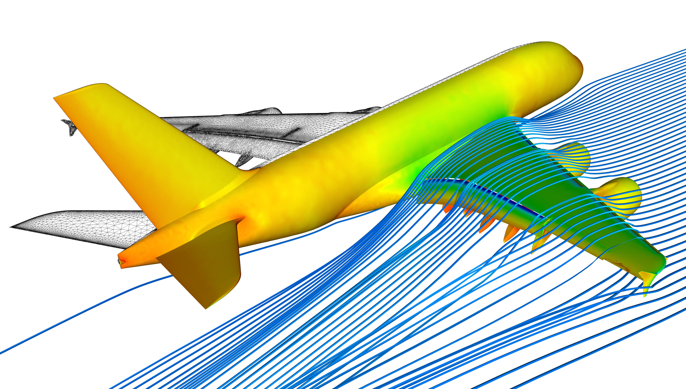

Your gateway to understanding the fascinating world of Aerospace Engineering.
 Learn MoreAeroInsight is dedicated to providing top-notch education and insights into the field of aerospace engineering. Our mission is to equip students and professionals with the knowledge and skills needed to excel in this exciting industry.
Our platform offers a comprehensive range of resources, including detailed articles, tutorials, and interactive modules. Whether you are a student looking to enhance your understanding of aerodynamics, a professional seeking to stay updated with the latest advancements, or an enthusiast passionate about aerospace, AeroInsight has something for you.
Join our community and explore topics from fundamental principles to advanced aerospace technologies. We cover various aspects of aerospace engineering, such as fluid dynamics, propulsion systems, aircraft design, and space exploration. Our content is curated by experts in the field, ensuring that you receive accurate and up-to-date information.
At AeroInsight, we believe in continuous learning and professional development. We provide opportunities for networking, collaboration, and knowledge sharing among our members. Engage with like-minded individuals, participate in discussions, and contribute to the growth of our community.